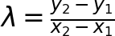

Adding two distinct points uses the slope of their chord; doubling uses the tangent slope. The resulting point is reflected across the x-axis. Over finite fields, division means multiplication by a modular inverse.

Toy example: y² = x³ + 2x + 2 (mod 17), G = (5,1), 2G = (6,3), 3G = (10,6), and 19G = O.